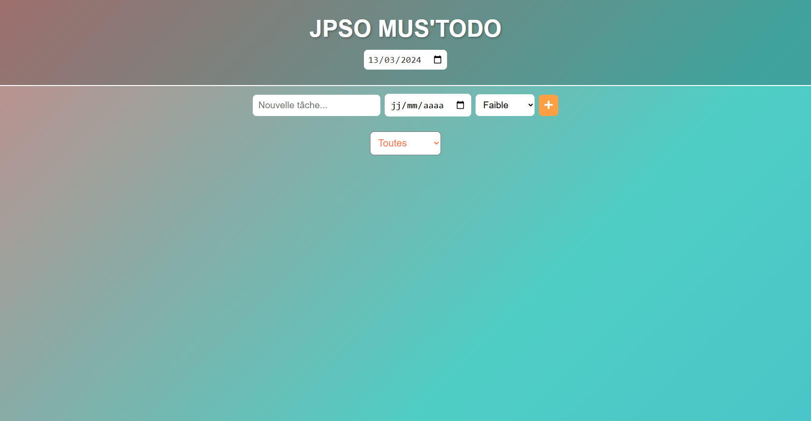

La Todolist est une application web simple et efficace permettant de gérer des tâches quotidiennes. Développée dans le cadre d'un travail pratique académique, elle met en œuvre les fondamentaux du développement web front-end.
